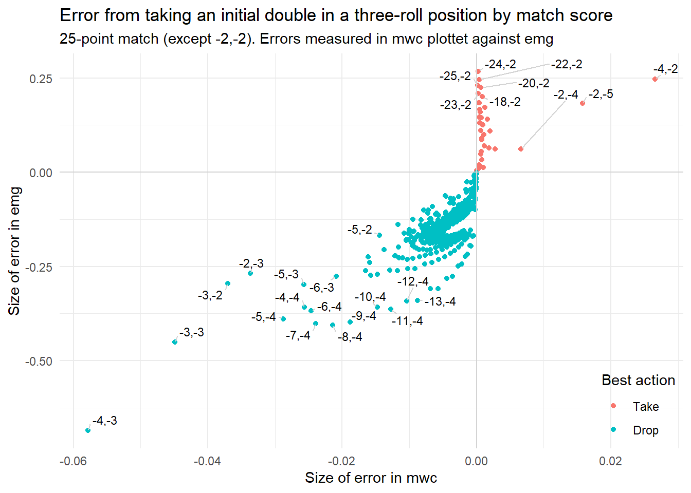

Explore EMG Normalization
Why this?
This note explores how eXtreme Gammon normalizes mwc, Match Winning Chances, to emg, Equivalent to Money Game, a metric that is (supposedly) comparable to money game equities. It is similar to what Jeremy Bagai did years ago in a detailed analysis here.
Introduction
In backgammon money games mistakes are usually evaluated in terms of equities, \(E\), or expected value. \(E=0\) means that the game is even. Equities are typically normalized so the level of the cube and the stakes are not reflected in the size of mistakes: \(E=0.1\) means that the expected value of a position is one tenth of the cube value. If you made a \(0.05\) error, your position’s expected value just dropped by five percent of the cube value.
In match play, the natural unit of measurement is match winning chances, mwc. For example, trailing 3-away, 2-away, sometimes written as (-3,-2), yields \(mwc=0.40\), assuming strong, equal players. Unless otherwise noted, all mentioned equities are from the Kazaross XG2 match equity table, used as default by eXtreme Gammon (XG).
The \(mwc\) at stake varies by score. At double match point, a one point gain is worth \(0.5\ mwc\), the difference between an even game, \(mwc=0.50\) and a sure victory, \(mwc=1.00\). At the beginning of a 17-point match one point is worth only about \(0.04\ mwc\).
In a sense, double match point is like playing for $10 per point, compared to $0.8 per point at the beginning of the match.
Also, the value of one point is different for the leader and the trailer; at (-3,-2) one point is worth \(0.10\ mwc\) for the trailer but \(0.15\ mwc\) for the leader.
EMG normalization
As mentioned, in money game we often like to compare errors without considering the level of the cube and the stakes. We rarely say things like “Taking that three-roll position cost me about $4.5 because the cube was at 4 and we played for $10 per point.” It is more common to say that the take is a 0.15 error.
This way, we can compare conceptual errors by abstracting away the specifics. If you would like the actual cost of taking, you would multiply the 0.15 error by the cube value and the stakes.
Likewise, it can be useful to normalize match play errors, so that we can compare them to money game, and so we can compare errors across scores. If some error loses \(0.03\ mwc\) at (-4, -5), but only \(0.01\ mwc\) at (-17, -10) is that because the first score is closer to the end of the match, where points are more valuable, or is it because the first error is a bigger one, conceptually? And how big would the same mistake have been in a money game?
This is where emg (Equivalent to Money Game) comes in. The idea is to scale the difference between losing a single point and winning a single point in a match to the interval \([-1;+1]\), that we use in money game.
For example, at (-3,-7) the leader has \(mwc\) of about \(0.76\). If he loses one point and gets to (-3,-6) that drops to \(0.71\). If he wins one point for (-2,-7) that rises to \(0.84\). The range is \([0.71;0.84]\), and the difference between winning and losing a single point is \(0.84-0.71 = 0.13\). We can scale any \(mwc\) value to the corresponding money interval \([-1;+1]\) like this:
\[emg =\frac{mwc-0.71}{0.13}\times{2}-1\]
So the \(emg\) for our minimal value of \(mwc=0.71\) becomes:
\[emg =\frac{0.71-0.71}{0.13}\times{2}-1=-1\]
And for our maximum value of \(mwc=0.84\) we get:
\[emg =\frac{0.84-0.71}{0.13}\times{2}-1=+1\] Of course, with the doubling cube and gammons, you can be even worse off and end up outside the interval, like if you’re sure to lose a gammon and \(E=-2.00\).
More generally, if \(mwc_{min}\) is the match winning chance a player has after losing the cube value, and \(mwc_{max}\) is the corresponding chance after winning the cube value, then we can calculate \(emg\) from any \(mwc\) at any score like this:
\[emg =\frac{mwc-mwc_{min}}{mwc_{max}-mwc_{min}}\times{2}-1\]
So if we lead (-3,-7) and mess up the opening roll so our \(mwc\) drops from \(0.76\) to \(0.75\), then the size of the error in \(emg\) would be:
\[emg =\frac{0.75-0.71}{0.13}\times{2}-1=-0.38\]
This also means that the leader’s \(emg\) at the beginning of the game is negative:
\[emg =\frac{0.76-0.71}{0.13}\times{2}-1=-0.23\]
That seems a little funny. The reason is, that in some sense the leader is closer to losing the game that to winning, since the gain by winning is much bigger than the loss from losing. The leader is not in the middle, but closer to the lower end of the interval \([-1;1]\).
This is just one counter-intuitive thing about emg normalization; there are more:
The problem
Sometimes, the \(emg\) appears really broken. Take a pure three-roll position where the non-roller has winning probability, \(P(w)\) of:
\[ P(w) = \frac{5}{6}\times\frac{1}{6}\times\frac{5}{6}\ + \ \frac{5}{6}\times\frac{5}{6}\times\frac{5}{6}\times\frac{1}{6} = 0.212 \] Consider two cases of such a position:
- You’re being doubled trailing (-3,-2)
- You’re being redoubled when tied (-3,-3)
In both cases you can take for the match (possibly via an automatic redouble), and get \(mwc = 0.212\). Or you can pass and get to (-3,-1) which is \(mwc=0.249\) The two cases appear identical. You’re better of passing. Taking would cost \(0.249-0.212 = 0.037\ mwc\) in both situations.
But plucking the two cases into our \(emg\) formula we get:
\(emg =\frac{0.21219-0.24924}{0.5-0.24924}\times{2}-1=-1.296\)
\(emg =\frac{0.21219-0.24924}{0.75076-0.24924}\times{2}-1=-1.148\)
So at (-3,-2) the mistake of taking comes to a \(-0.296\ emg\) error; at (-3,-3) what appears to be an identical mistake comes to a \(-0.148\ emg\) error.
You can set up a pure three-roll position in XG and confirm that these are indeed the reported emg errors when accepting a (re-)double at those two scores.
What’s going on?
Inspecting the emg formula, it isn’t that hard to figure out: The \(0.037\ mwc\) error just looks smaller when you put it in the wide interval between losing and winning you get at (-3,-3) with cube at 2, compared to the more narrow interval at (-3,-2), cube at 1. As noted, the mwc interval in the two cases are \([0.25;0.50]\) and \([0.25;0.75]\) respectively.
It is counter intuitive, however, and you wonder if emg fails after all to be useful for comparing errors across scores, and between match play and money games.
On the other hand: Perhaps this is exactly what we want emg to do: A \(0.037\ mwc\) error is easier to make at the end of the match, and therefore perhaps shouldn’t count as heavily. Just like a $1 mistake is small when playing for $100 per point, but big when playing for $2 per point.
We can note, like Bagai did in his paper, that a similar observation can be made when you are being doubled to 8 (in the same three-roll position) at (-3,-5). You can again choose between trailing (-3,-1) with \(0.249\ mwc\) or playing for the match with \(0.212\ mwc\), which would be a \(0.037\ mwc\) error. This time the interval is even wider, so the emg normalized error by taking comes to \(-0.099\). This can be checked with XG.
We can also do a plot similar to the one Bagai showed, to visualize why the normalizations must necessarily result in different emg-values.
The plot shows three lines, one for each of the three cases. They all pass through the point where \(mwc = 0.25\) and \(emg = -1.0\) since losing the cube value in all cases results in (-3,-1) with \(mwc = 0.25\). Winning the cube value would result in mwc-values of \(0.5; 0.75; 1.00\) respectively.
The emg-values obtained by erroneously taking the cube (left-most data points) are all below \(-1.0\ emg\) since in all three cases we have a pass. But they cannot be equal, like we might intuitively expect, since the transformation is linear, and the three lines have different slopes.
More scores
Let’s look at the size of the error by taking the same three-roll position for more scores, to get a feel for how the emg normalization in general compares to raw mwc.
The money benchmark is the error of accepting a three-roll position, which is easy to calculate, since for money there can’t be any proper recubes. The three-roll position has an expected money game value of \(E = 2P(w) - 1 = -0.576\) for the non-roller. So after accepting an initial double, the non-roller faces an average loss of \(2\times -0.576=-1.151\) and the position is a money pass, since the loss of one point is just \(-1\). The size of the take error is \(-0.151\) (times the cube, times the stake, if you want the loss in real money).
The chart below shows the size of the error of accepting an initial double in a pure three-roll position, at all pre-crawford scores in a 9-point match. Errors are nomalized to emg, as explained above.
(Note that on the x-axis, negative values are the real errors; a positive value is the margin by which the take is correct.)
As the chart shows, at six scores the three-roll position is actually a take. The biggest take is, not surprisingly, at (-4,-2) where the non-roller has an automatic redouble that activates exactly the four points needed to win. Also, in some cases, when the non-roller needs two or three points, the high value of those points is enough to turn the position into a take.
The biggest passes are at (-4,-3) and (-2,-2), ignoring that in the later case one player would usually already have doubled by now. In general, the biggest passes are when the roller needs two, three or four points to win. In these cases, a two-point win is particularly valuable.
In about half of all scores the error from taking is bigger than for money, in the other half smaller, when we use the emg normalization to compare.
But we really wanted to figure out if the emg normalization was a good or a bad idea to begin with. So let’s show a similar plot with emg and mwc errors side-by-side:
The two plots show similar over-all patterns, but also some differences. Of course, both metrics agree on what scores produce takes; when one is negative the other is also, by definition.
The mwc-metric has the biggest error at (-2,-2); emg says this honor goes to (-4,-3). In a way, what emg says is this: ‘Yeah alright, taking at (-2,-2) is a big mistake. But part of the reason is, that there is so much mwc at stake at that score already. Any mistake is bound to be big. So we should adjust for that.’
But should we? It is hard to say. You could argue that conceptually the take is a bigger mistake at (-2,-2) because the score is special. Same thing could be said of (-2,-3) and (-3,-2) where emg also gives a different ranking.
Let’s do a few more plots to see if we can nail this better.
This one shows the same data, but plotted differently, with mwc at the x-axis, and emg at the y-axis.
Since the plot shows the same data some of the same things also stand out: (-2,-2) is a bit of an outlier; at (-4,-2) the non-roller has a big take. In general, there’s a reasonable correlation between mwc and emg. It’s worth pointing out that we don’t want a perfect correlation: If all points where placed exactly at the light green trend line, then mwc and emg would be equivalent, same thing on different scales, like Fahrenheit and Celsius. The idea is that emg should be different from mwc, more meaningful, more interpretable.
Let’s do the same plot but with more scores: All combinations from a full 25-point match. (We leave out the (-2,-2) oddball, to give more plotting space to the more ‘normal’ cases.)

Now, the correlation breaks down. In particular, for the very lopsided scores like (-25,-2) and (-18,2), the mwc at stake becomes tiny, so the margin by which the take is correct, is also small. At all the lopsided scores the non-roller appears to have a small take as measured by mwc.
The emg error, on the other hand, is a bit different at (-25,-2) compared to (-18,-2) for example. Just as emg tries to adjust for scores with a lot of mwc at stakes, it also adjust for very little mwc at stake, thus magnifying small mwc’s.
Again, it is debatable if this is really desired behavior or not.
Checker play errors
One final experiment before we wrap this up. As we have seen, part of the reason that the emg transformation can give surprising results, is that take errors are extrapolated outside the \([mwc_{min};mwc_{max}]\) interval that we use for normalization. A take error results in mwc smaller than a ordinary loss of the cube value, \(mwc_{min}\).
Checker play errors, on the other hand, are differences between mwc’s, and the are usually not that big (except in extreme cases).
Let’s consider a toy example: A last-roll bearoff where one player has two checkers left, one on the six point, one on the three point, with a two to play. The opponent owns the cube and has four checkers on her one point. The player has two options for his two:
- 6/4, for \(p(w) = \frac{5}{6} \times \frac{17}{36} = 0.394\), and \(E = 2P(w) - 1 = -0.212\)
- 3/1, for \(p(w) = \frac{5}{6} \times \frac{15}{36} = 0.347\), and \(E = 2P(w) - 1 = -0.306\)
For money, 3/1 would be a \(-0.306 + 0.212 = -0.094\) error.
At double match point, 3/1 would be a \(0.347 - 0.394 = -0.047\ mwc\) error.
Since 6/4 of course would be correct at all scores, and it is fair to say that 3/1 is the same conceptual error at all scores, we would like the emg transformation to produce the same value, no matter the score. One way to think of this: Suppose you’re browsing your matches for bear-off checker play errors, in order to fine tune your skill in that department. Then you would like to flag errors both early and late in the match. But the mwc-error from playing 3/1 at (-1,-1) is 16 times bigger than at (-25,-25).
It’s reasonable to think that playing 3/1 shouldn’t be disregarded as an error, just because it happened at (-25,-25) rather that at (-1,-1).
To achieve this, we really need some kind of normalization; looking at mwc will tend to miss errors early in a long match.
Does emg work for this purpose? I think it should, based on the plots and formulas above, but just in case I’m missing something, let’s try to calculate the size of the error of playing 3/1 at all scores, in emg and in mwc:
As expected, emg normalizes the error of playing 3/1 to \(-0.0926\) for all scores. (This value is a little off from the earlier mentioned \(-0.094\) because of rounding error in that manual calculation.) We see how the mwc error is high near the end of the match, lower at the beginning. (-25,-25) is not the very rightmost data point, because for these scores the mwc-errors are tiny, and the exact value depends on rounding and precision of the match equity table.
Conclusions
The choice of emg or mwc as a metric, really depends on the purpose. For example:
If you want to identify, say, the five errors in a match that hurt your winning chances the most, use mwc. This is the ‘true’, absolute cost of errors, in the same way that a specific amount of money would be the ‘true’ cost of errors in money games. These five errors will more likely be found late than early in the match, since this is were the stakes are highest.
If you want to identify the five errors in a match that could reflect mis-evaluating the position, use emg. As the last-roll example shows, this allows you to compare similar conceptual errors across scores.
Be careful of using emg for comparing cube errors across different scores, the results can be surprising, although it is a bit unclear if they should be considered outright misleading.
Can we do a better normalization than the current emg? The thought that comes to mind, is to use a bigger interval of mwc, like the loss or win of two time the cube and still scale that to \([-1;+1]\). But that requires a bit more thought. Anyway, practically speaking, we’re likely pretty much stuck with the way XG implements emg.
If you’ve read this far: Thank you. That is really impressive.